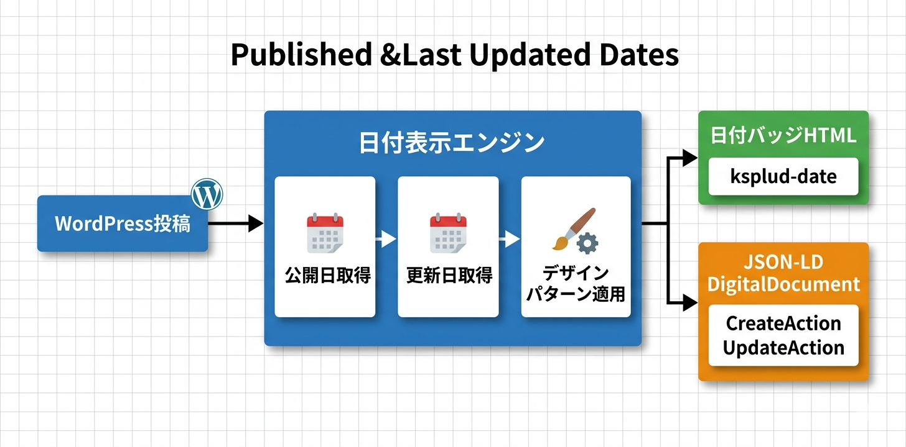

Kashiwazaki SEO Published & Last Updated Dates マニュアル

Kashiwazaki SEO Published & Last Updated Dates は、WordPressの投稿に公開日・更新日を自動表示し、DigitalDocument + CreateAction/UpdateAction スキーマのJSON-LDを出力するSEOプラグインです。カスタムHTML要素（<ksplud-date>）による軽量な実装と、4種類のデザインパターンによる柔軟なカスタマイズに対応します。
記事の公開日と更新日の表示は、コンテンツの信頼性と鮮度をユーザーと検索エンジンの両方に伝えます。本プラグインは日付バッジの視覚的な表示に加え、DigitalDocument JSON-LDスキーマで日付情報を構造化データとして出力します。
主な機能
日付表示
投稿の公開日・更新日をコンテンツの前後に自動挿入
構造化データ
DigitalDocument + CreateAction/UpdateActionスキーマをJSON-LDで出力
デザイン設定
4種類のデザインパターンと色・フォントのカスタマイズに対応
プラグインの特長
- 投稿の公開日・更新日をコンテンツの前後に自動挿入
- DigitalDocument + CreateAction + UpdateAction スキーマのJSON-LDを自動出力
- カスタムHTML要素（
<ksplud-date>）による軽量な実装 - 投稿タイプ別の表示設定に対応
- 4種類のデザインパターンから選択可能
- 色・フォントの詳細なカスタマイズに対応
- フロントエンド: CSS 8.4KB、JS 5.4KB（カスタム要素）

SEO・GEO（生成AI最適化）への効果
構造化データによる検索エンジン最適化
本プラグインは DigitalDocument、CreateAction、UpdateAction スキーマのJSON-LDを自動出力します。構造化された日付データにより、検索エンジンがコンテンツの公開日・更新日を正確に把握できるようになり、検索結果での日付表示や鮮度評価に活用されます。
E-E-A-T（経験・専門性・権威性・信頼性）への貢献
ユーザーに公開日・更新日を明示することで、コンテンツの信頼性と透明性が向上します。Googleの品質評価ガイドラインにおけるE-E-A-T（経験・専門性・権威性・信頼性）の観点からも、日付情報の表示はポジティブなシグナルとなります。
コンテンツライフサイクルの明確化
CreateAction（作成）とUpdateAction（更新）のスキーマにより、コンテンツのライフサイクルが構造化データとして明確に伝達されます。検索エンジンはこの情報をもとに、コンテンツの鮮度や更新頻度を評価できます。
生成AI（GEO）への対応
AIは構造化された日付情報を参照し、コンテンツの新しさを評価できます。CreateAction/UpdateAction スキーマにより、AIがコンテンツの作成日・最終更新日を正確に把握し、回答の情報源としての鮮度評価に活用される可能性があります。
目次（マニュアル構成）
| ページ | 内容 |
|---|---|
| 概要 | プラグインの機能概要、SEO/GEO効果、動作要件 |
| インストール・初期設定 | インストール手順、デザインパターン・投稿タイプ・表示位置の基本設定 |
| 詳細設定 | デザインカスタマイズ、色・フォント設定、JSON-LD出力の詳細 |
| トラブルシューティング | よくある問題と対処法、動作要件、技術仕様、アーキテクチャ |
動作要件
| 項目 | 要件 |
|---|---|
| WordPress | 5.0 以上 |
| PHP | 7.4 以上 |
| 対応ブラウザ | Chrome、Firefox、Safari、Edge（最新版） |
インストール後すぐに使い始めたい場合は、インストール・初期設定ページに進んでください。